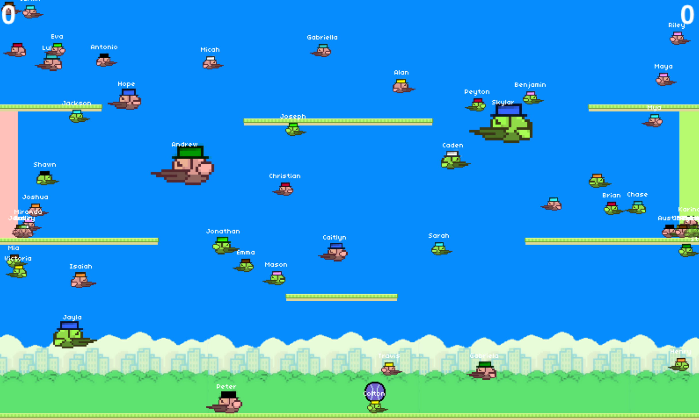
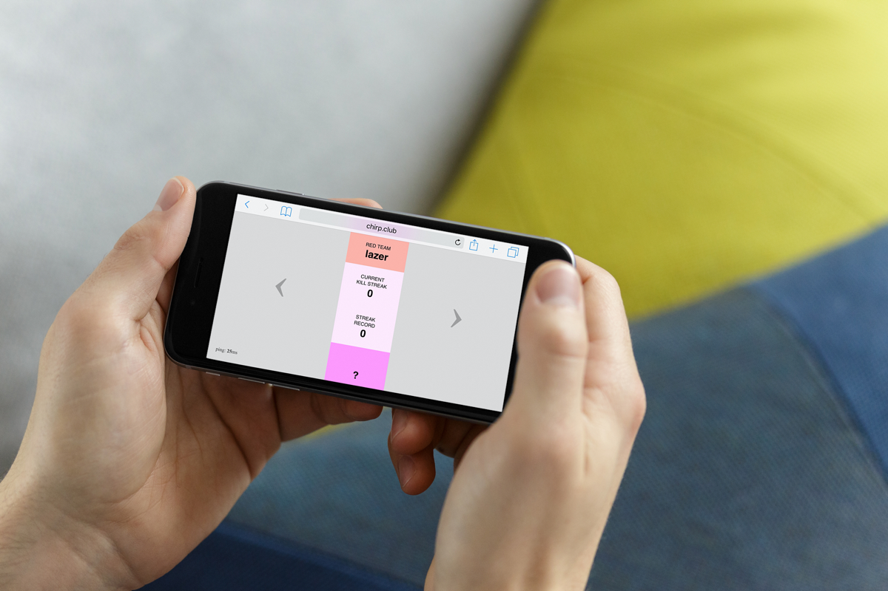
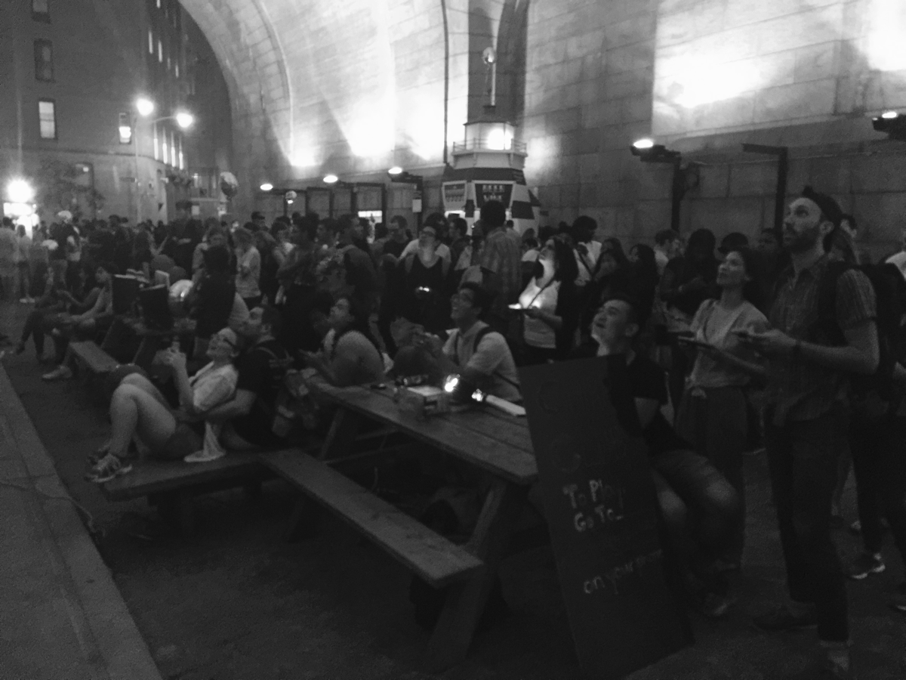
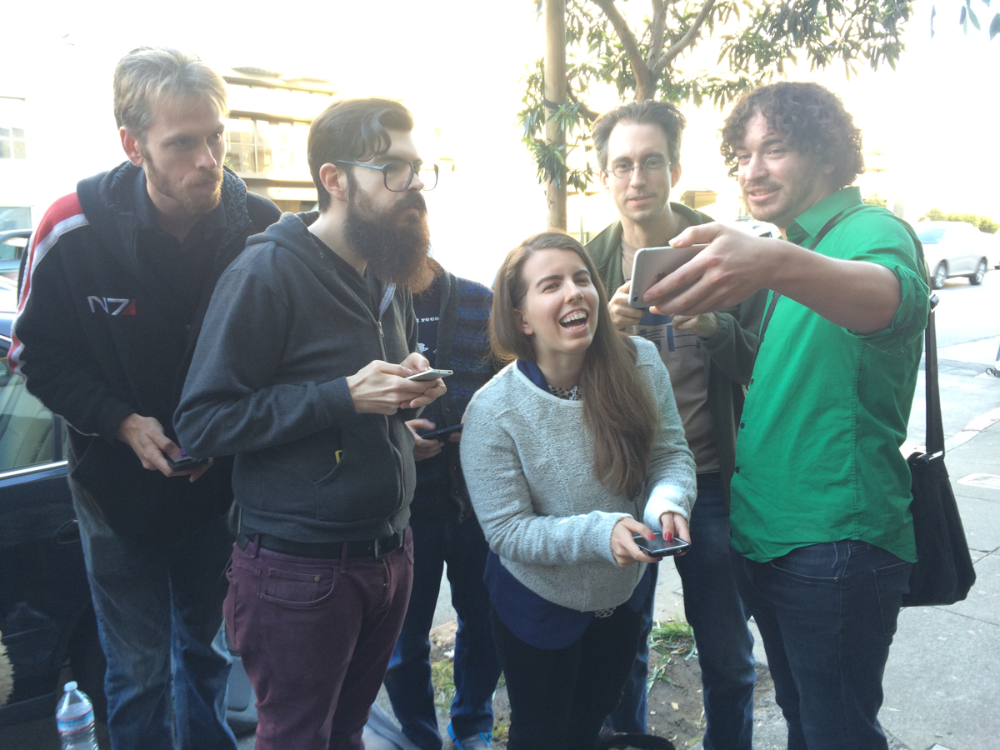

Chirp Club
{kind=link}
Chirp Club is a twitchy competitive local multiplayer videogame combining Joust-style movement and combat with elements of field sports.
{kind=link}
Anywhere from 2 to 100 players can join a game simply by going to a web site on their smartphone, with no need to wait for a new round to start or another player to stop playing. It's simple enough that anybody can learn to play in less than a minute!
{kind=link}
Chirp Club was created to make competitive local multiplayer more approachable. Instead of specialized hardware, it uses a web browser as a screen and smartphones as controllers. Instead of limiting the number of players or making new players wait until the end of a round, anyone can join at any time. Instead of a steep learning curve, newcomers can enjoy high-level competitive play within seconds or minutes of starting.
{kind=link}
While many non-digital casual party games share the qualities that make Chirp Club great, Chirp Club is an attempt to bring that pick-up-and-play mentality and focus on accessibility to competitive e-sports-style games.
Chirp Club has been shown at events and venues such as Come Out and Play (SF and NYC), Bit Bash, IndieCade East, Different Games, and Babycastles.
With almost a decade's hindsight, Chirp Club is an extremely curious game. It has almost zero "juice" -- for a combat-focused game, there aren't even custom animations when two birds are attacking each other. And yet, the movement sandbox is sufficiently compelling that playtesters would consistently play for at least half an hour unprompted, even in less-than-ideal environments such as using a small smartphone screen as the game display. In public showcase settings, it wasn't uncommon to see the majority of players stick around for upwards of an hour.
I consider Chirp Club something of a design white whale. The prototype is so compelling, and yet the reason it remains as a (playable, fun, award-winning) prototype is it ultimately isn't commercializable for a whole host of reasons. I spent a year attempting to build my own VC-funded indie game console using Chirp Club's technology stack, largely as a way to ease up some of the technical and commercial constraints of releasing a game like this.
Showing Chirp Club at your event
I used to have a section on this site letting you know what would be necessary to showcase Chirp Club at an event. That's obviously more tenuous right now with the state of in-person events. Still, feel free to shoot me an email at chirpclub@lazerwalker.com. Be warned that the technical requirements are a bit odd.